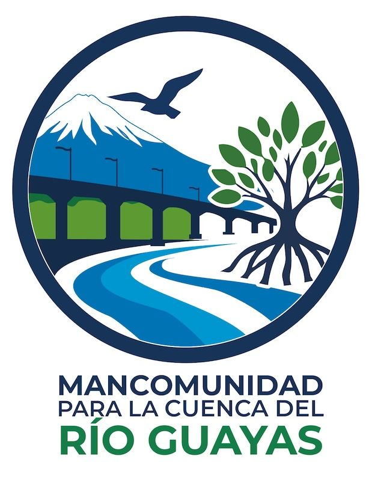
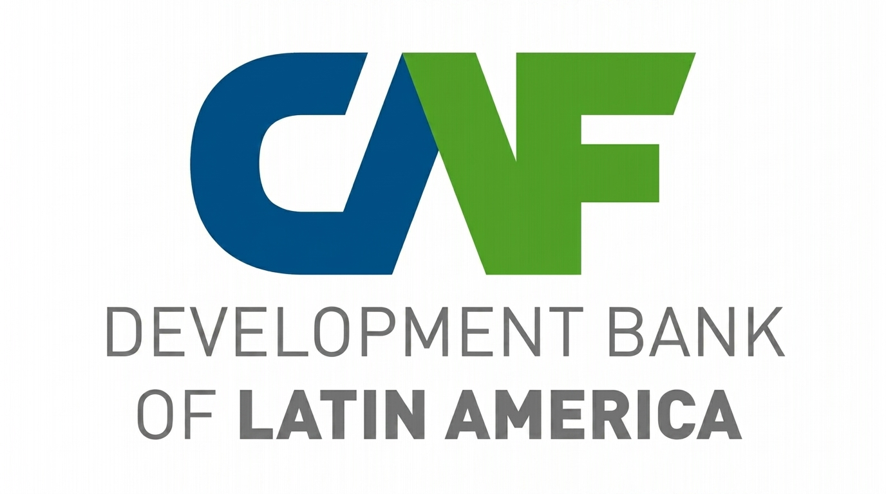
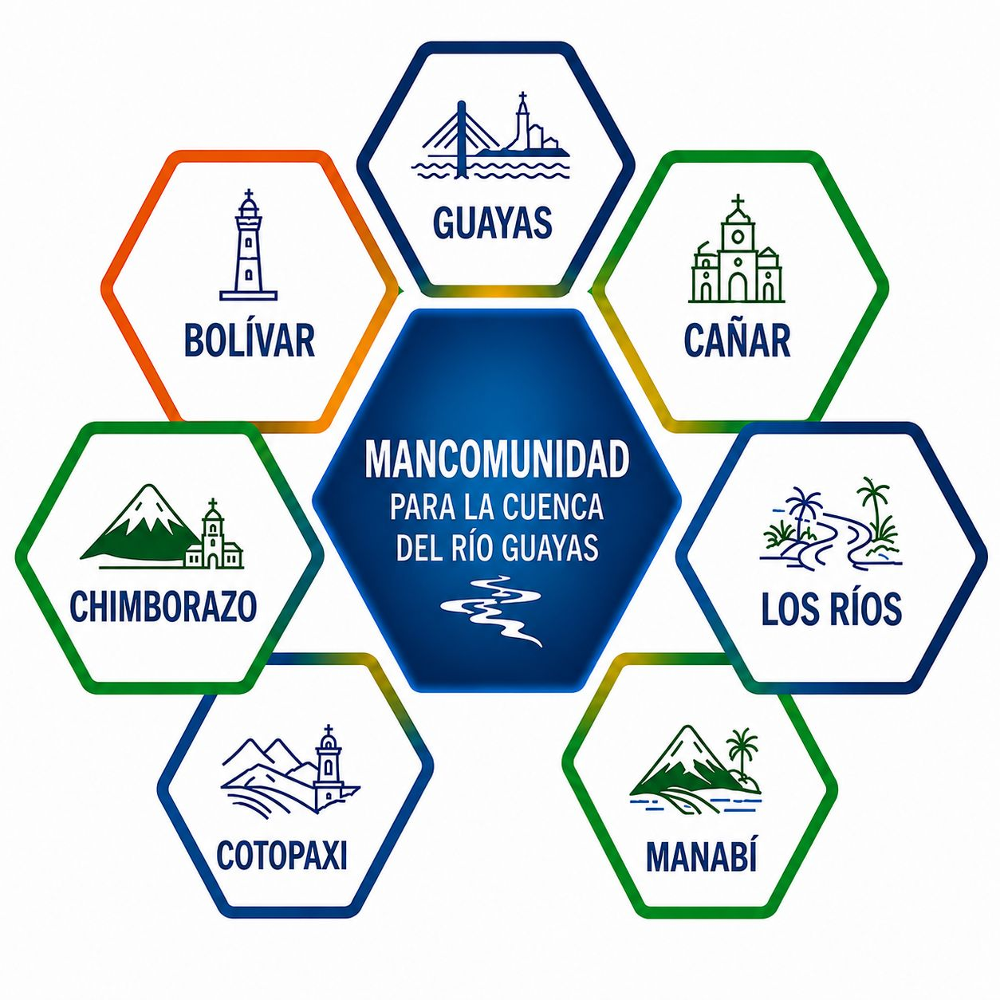

28 de julio de 2026
La primera Asamblea de la Mancomunidad para la Cuenca del Río Guayas será el 28 de julio de 2026
La Mancomunidad para la Cuenca del Río Guayas (MCRG) anunció la realización de su primera asamblea oficial el próximo 28 de julio de 2026, un hito histórico que marcará el inicio de una nueva etapa en la gestión ambiental y territorial de la cuenca hidrográfica más importante del país.
La MCRG busca consolidar a la Cuenca del Río Guayas como el activo estratégico más importante del Ecuador, promoviendo una visión compartida de desarrollo sostenible.

7 de diciembre de 2025
Firma de convenio entre la Mancomunidad para la Cuenca del Río Guayas y la CAF
La CAF otorgó un préstamo de cooperación técnica no reembolsable a la Prefectura del Guayas. El objetivo es formular una Estrategia de Gestión Ambiental Integral que permita restaurar ecosistemas, conservar el recurso hídrico, fortalecer la gobernanza territorial y diseñar una hoja de ruta financiera que garantice la sostenibilidad de las acciones.
Los cuatro pilares de la estrategia
Gobernanza — modelo participativo e interinstitucional para la gestión integrada de la cuenca, en el marco de la Mancomunidad provincial.
Diagnóstico integral — línea base sobre la situación actual de la cuenca y sus ecosistemas estratégicos, identificando problemáticas y oportunidades de restauración.
Portafolio de intervenciones — proyectos estratégicos que aseguren la resiliencia de los ecosistemas frente al cambio climático.
Estrategia de financiamiento — hoja de ruta financiera que viabilice y sostenga el portafolio de proyectos priorizados.
La iniciativa busca restaurar los ecosistemas, conservar el agua, fortalecer la gobernanza y asegurar un futuro sostenible para la Cuenca del Río Guayas. La Unidad Ejecutora será la propia Mancomunidad, consolidando el liderazgo territorial en la gestión ambiental y la articulación con los cooperantes internacionales.

7 de noviembre de 2025
Creación de la Mancomunidad para la Cuenca del Río Guayas
La firma del convenio de creación de la Mancomunidad para la Cuenca del Río Guayas se llevó a cabo el 7 de noviembre de 2025, cuando los prefectos de Guayas, Cañar, Manabí, Los Ríos, Bolívar, Chimborazo y Cotopaxi suscribieron un acuerdo para la recuperación de la cuenca del río Guayas.
La Mancomunidad tiene como objetivo articular acciones orientadas a la gestión integral y sostenible de los recursos hídricos, la protección ambiental y el fortalecimiento de las capacidades locales para la protección de la Cuenca del Río Guayas.